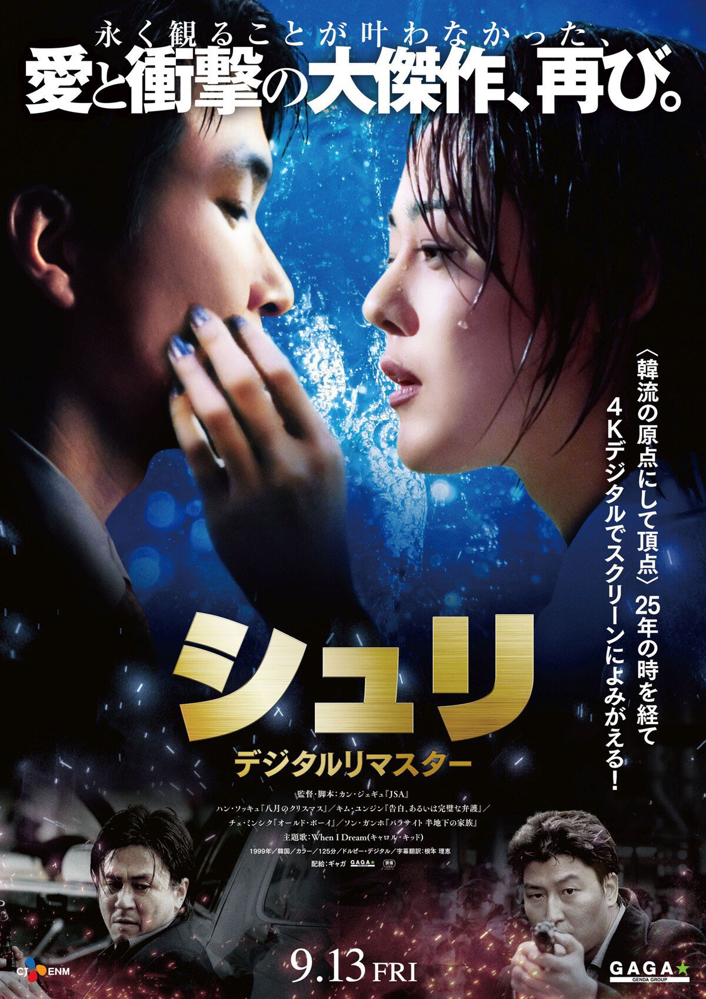
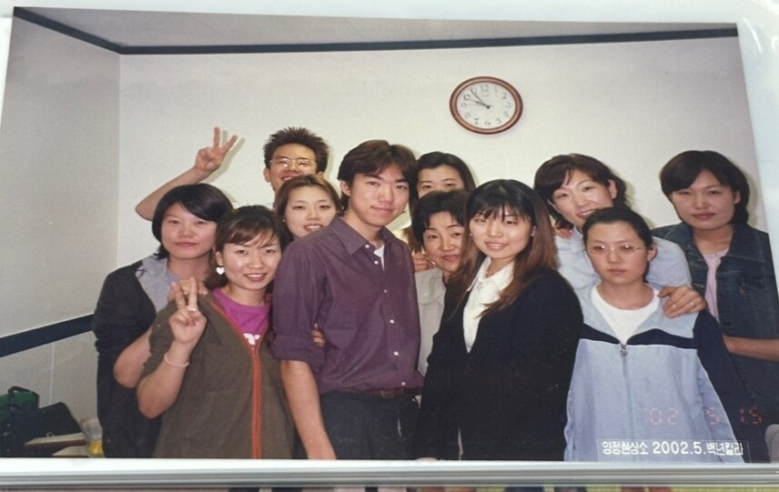

교수님의 한국 생활에 대해 여쭤 보았습니다.
한국에 오신 이유는?
영화 <쉬리>를 알고 계시나요? 물고기 이름인 쉬리에서 따온 영화 제목인데 한석규나 송강호가 나오는 2000년대 영화예요. 제가 대학생일 때 일본에서 개봉한 최초 한국 영화였죠. 일본에서 유행하게 된 한류 파도의 첫 시작이라고도 할 수 있겠네요. 이 영화를 보고서 한국에 빠지게 된 계기가 되었어요.
한국에 오신 이후의 일상생활
무작정 영화를 보고 ‘아 이건 한국으로 가야겠다’라고 다짐했어요. 우선, 일본인이면 일본어 선생을 할 수 있다는 말에 학원 강사가 되었습니다. 학원 강사가 되고자 면접을 봤을 때, 4대 보험이나 집이 있는지 등의 질문에 대답을 못 했어요. 당장 숙소가 없으니 여관이나 모텔에서 한 달 정도 지내게 되었습니다. 처음에 여관이 뭐냐 물어보니 한국인 선생이 료칸이라고 해서 일본의 료칸이라고 생각하고 뭐 호텔 같은 느낌이겠거니 하고 갔는데 전혀 달랐죠. 한 달에 30만원 정도 지불했던 것 같아요. 그래도 침대나 화장실 같은 게 제대로 갖춰져 있고, 식사만 혼자 해결하면 되니까 일단 여기서 지내면서 집을 찾아보자고 생각했죠. 수업 중에 학생이 “선생님 어디 사세요?” 물어보면 “여관에 살고 있습니다.” 하니 모두 위험하다면서 놀라더라고요(웃음). 그래서 수업을 듣는 학생들이 모여서 다 같이 부동산을 찾아 줬어요. 결국에는 제가 당시에 할 수 있는 범위 내에서 생활환경을 조금씩 구축해 나갔던 느낌이네요. 매일매일이 살아남기 위해서 치열했었어요.
생활하면서 힘들었던 부분은?
집을 구하는 게 문제였어요. 부동산 시스템이 달랐고, 구직 활동도 마찬가지였어요. 그리고 한국어를 아예 모르는 상태에서 부산으로 처음 왔는데...사투리 억앙을 이해하는데 시간이 걸렸어요. NHK 같은 방송을 통해 일본인 발음으로 인사말부터 조금씩 공부했어요. 그래도 파고다에서 좋았던 점은 초급, 중급, 고급 이렇게 레벨이 나눠져 있었거든요. 고급반 학생들과는 일본어로 의사소통이 가능했거든요. 그래서 고급반 학생과 만나기 전에 질문 리스트 같은 걸 만들어서 “은행에 갈 때 계좌가 필요한데 계좌 이동이 뭔가요?” 같은 질문들을 준비해갔었어요. “집주인이 계좌 이동을 하라고 하는데 그게 뭔가요?” 라던가, 그러면 고급반 학생이 같이 은행에 가서 제 업무를 도와줬던 그런 느낌이었죠.
그리고 식사 문제도 있었는데, 제가 친구가 없잖아요. 그래서 편의점밖에 못 갔어요. 말도 모르니까 만 원짜리 하나 들고 라면 하나, 김밥 하나. 이런 식으로 간단한 것만 먹었습니다. 식당을 가더라도 주문을 못 했죠. 그리고 당시에는 혼자서 식당을 못 가는 시절이기도 했고요. 제가 한국어에 좀 익숙해져갈 때, 부대찌개가 너무 먹고 싶어서 혼자 가서 주문을 해봤는데 2인분부터 주문하라고 하더라고요. 물론 당시에는 그냥 2인분 달라고 했지만요(웃음). 혼자 식당에 가니까 뭔가 이상한 사람이 된 기분이었어요. 물론 처음에는 맥도날드도 쉽게 못 갔어요. 영어로 말해도 못 알아듣고, 치즈버거 발음이 안 되서 항상 새우버거만 먹고, 감자튀김이랑 음료수도 먹고 싶은데 음료수 발음이 안 되니까 새우버거 하나만 먹었거든요. 지금은 키오스크 같은 게 잘 갖춰져 있어서 그냥 가고 싶을 때 가면 되는데. 당시에는 아주 힘들었죠. 다이어트가 되더라고요.
대학시절에 생각하셨던 진로를 변경하신 이유는?
학원 강사직을 그만 둔 뒤, 부산외대에서 석사, 박사 과정을 거치고 교수로서 일을 시작한 건 수원대학교였어요. 당시 교양과목으로 하는 수업이라 A1 레벨 정도의 수업밖에 진행할 수 없었는데, 또 다른 일자리를 찾아보려고 하니 지도교수님께서 어느 대학에 시간강사를 구한다는 이야기가 있더라, 추천해주겠다는 이야기가 진행되어왔어요. 시간이 지나 부산으로 돌아오면서 학생들의 레벨이 높아진 걸 보고 심화 수업을 하게 되었어요. 교수 한 명이랑 학생 그룹으로 일본에 문화탐방하는 이벤트나 아후레코 같은 프로그램을 기획하면서 어느새 점점 교수직을 지금까지 이어오게 됐어요.
물론 진로를 정하는 부분에 있어서 제가 좋아했던 유적 발굴이나 고고학 분야 사이에서 고민을 아주 많이 했어요. 많이 방황하고 고민했었죠. 처음에 한국에 와서 한국에서의 생활이 재미있지만 몇 년 정도 지나면 다시 일본에 돌아가야겠다고 처음에는 그렇게 생각했거든요. 그 사이에 한국에서 생활하면서 제가 이 누군가를 가르치는 일 자체를 멈춘 적이 없었어요. 중간에 일을 쉬고 일본으로 돌아갈 시기가 있었다면 또 달라졌을 수도 있겠지만, 결국에는 '선생이라는 부분에서 도망칠 수가 없겠다. 이게 그냥 내 운명인가보다.'' 생각하게 되었죠. 그래서 고고학을 고집하기보다 선생을 계속 하는 게 좀 더 괜찮지 않을까 싶었어요. 바꿔 말하면 다시 고고학으로 돌아갈 타이밍이 없었다고 봐도 될 거 같아요. 한국에 오고 나서부터 계속 선생을 했으니까요. 그래도 교수직을 하면서 제 취미를 살리려고 하고 있습니다. 그래서 지금의 생활이 즐겁다고 생각해요. 좋아하는 것들을 같이 병행하니까, 고고학도 물론 취미로 계속하고 있고요. 서로가 도와주고 있는 느낌이죠. 좋아하는 것과 일 사이의 적당한 지점을 잘 찾은 것 같습니다.
교수직을 하시면서 가장 기억에 남는 일이 있다면?
글쎄요... 교수직을 하면서 보람이 있었다고 느낀 건, 제가 가르쳤던 제자가 교토에 가서 우연히 만났을 때 “센세!”하고 불러줬던 순간이요. 지금까지 저를 거쳐간 학생들은 많았겠지만, 제게 “사와이 센세 아니신가요?”라고 말을 걸어줬을 때 교수를 하기 잘했다고 생각이 들었던 것 같아요. 어쨌든 학생의 기억에 남는 사람이 되었으니까요.
반대로 안타까운 이야기라서 기억에 남는 학생이 있는데, 당시 SNS 같은 연락망도 없던 시절이라 졸업을 앞두고 갑자기 행방불명이 된 학생이 몇 명 있어요. 사정을 알면 들어주거나 도와줄 수도 있었을 텐데 제가 마지막에 좀 더 상담을 해 보는 게 좋았나 싶더라고요. 무슨 일이 있나 싶다가도 찾는 게 쉬운 일이 아니니까요. 어디선가 우연히 마주칠지도 모르기에 더욱 잊어버리지 않으려고 해요. 그래서 지금도 걱정이 좀 되네요.
인생에서 가장 힘들었던 적이 있다면?
한국에 있을 때, 물론 생활이 힘들다던가 해서 여러가지로 고생한 기억이 많은데, 그중에서 수업으로 쉬지 못해서 할머니가 돌아가셨을 때 바로 가지 못했던 게 괴로웠어요. 가족들은 제가 강사로 있는 사정을 알고 있으니 무리해서 안 와도 된다고 했지만 결국 장례식에 참가하지 못했죠. 수업이라는 게 한 번 쉬게 되면 그걸 다른 사람들이 커버해야 하는 것도 큰일이고, 가족들이 사정을 다 알고 있으니 '나중에 무덤에 찾아뵈어야 되겠다'라고 생각은 했지만 그래도 당시에 기분이 많이 안 좋았죠. 일본에 있었다면 어떻게 잘 맞춰서 갈 수도 있었을텐데 해외에 있었으니까요. 그리고 일본에 돌아가고 그 일들이 진짜 현실이 되는 그 순간이 가장 힘들었어요. 한국에 있을 땐 실감이 잘 안 났지만, 수업이 끝나고 일본에 돌아가게 되면 그게 이제 진짜가 되는 거잖아요. 할머니가 돌아가셨다는 사실이요. 일본에 가기 전에는 그게 실감이 잘 안 났거든요. 그런데 일본에 돌아가니까 현실감이 생기는 거죠. 많이 괴로웠어요.